Simplify the colors of an image
recolorize.RdClusters the colors in an RGB image according to a specified method, then recolors that image to the simplified color scheme.
recolorize(
img,
method = "histogram",
bins = 2,
n = 5,
color_space = "sRGB",
ref_white = "D65",
lower = NULL,
upper = NULL,
transparent = TRUE,
resid = FALSE,
resize = NULL,
rotate = NULL,
plotting = TRUE,
horiz = TRUE,
cex_text = 1.5,
scale_palette = TRUE
)Arguments
- img
Path to the image (a character vector) or a 3D image array as read in by
readPNG{readImage}.- method
Method for clustering image colors. One of either
histogramorkmeans. See details.- bins
If
method = "histogram", either the number of bins per color channel (if a single number is provided) OR a vector of length 3 with the number of bins for each channel.- n
If
method = "kmeans", the number of color clusters to fit.- color_space
Color space in which to minimize distances, passed to
grDevices{convertColor}. One of "sRGB", "Lab", or "Luv". Default is "Lab", a perceptually uniform (for humans) color space.- ref_white
Reference white for converting to different color spaces. D65 (the default) corresponds to standard daylight.
- lower, upper
RGB triplet ranges for setting a bounding box of pixels to mask. See details.
- transparent
Logical. Treat transparent pixels as background? Requires an alpha channel (PNG).
- resid
Logical. Return a list of different residual metrics to describe the goodness of fit?
- resize
A value between 0 and 1 for resizing the image (ex.
resize = 0.5will reduce image size by 50%). Recommended for large images as it can speed up analysis considerably. See details.- rotate
Degrees to rotate the image clockwise.
- plotting
Logical. Plot recolored image & color palette?
- horiz
Logical for plotting. Plot output image and color palette side by side (
TRUE) or stacked vertically (FALSE)?- cex_text
If
plotting = TRUEandscale_palette = FALSE, size of text to display on the color palette numbers.- scale_palette
Logical. If plotting, plot colors in the color palette proportional to the size of each cluster?
Value
An object of S3 class recolorize with the following attributes:
original_img: The original image, as a raster array.centers: A matrix of color centers in RGB (0-1 range).sizes: The number of pixels assigned to each color cluster.pixel_assignments: A matrix of color center assignments for each pixel.call: The call(s) used to generate therecolorizeobject.
Details
Method for color clustering: kmeans clustering tries to
find the set of n clusters that minimize overall distances. Histogram
binning divides up color space according to set breaks; for example, bins = 2
would divide the red, green, and blue channels into 2 bins each (> 0.5 and <
0 .5), resulting in 8 possible ranges. A white pixel (RGB = 1, 1, 1) would
fall into the R > 0.5, G > 0.5, B > 0.5 bin. The resulting centers represent
the average color of all the pixels assigned to that bin.
K-means clustering can produce more intuitive results, but because it is iterative, it will find slightly different clusters each time it is run, and their order will be arbitrary. It also tends to divide up similar colors that make up the majority of the image. Histogram binning will produce the same results every time, in the same order, and because it forces the bins to be dispersed throughout color space, tends to better pick up small color details. Bins are also comparable across images. However, this sometimes means returning empty bins (i.e. the white bin will be empty if clustering a very dark image).
Background masking: lower, upper, and transparent are all background
masking conditions. Transparency is unambiguous and so tends to produce
cleaner results, but the lower and upper bounds can be used instead to
treat pixels in a specific color range as the background. For example, to
ignore white pixels (RGB = 1, 1, 1), you might want to mask all pixels whose
R, G, and B values exceed 0.9. In that case, lower = c(0.9, 0.9, 0.9) and
upper = c(1, 1, 1). Regardless of input background, recolored images are
returned with transparent backgrounds by adding an alpha channel if one does
not already exist.
Resizing: The speed benefits of downsizing images are fairly obvious (fewer pixels = fewer operations). Because recoloring the images simplifies their detail anyways, downsizing prior to recoloring doesn't run a very high risk of losing important information. A general guideline for resizing is that any distinguishable features of interest should still take up at least 2 pixels (preferably with a margin of error) in the resized image.
Examples
# filepath to image
img <- system.file("extdata/chongi.png", package = "recolorize")
# default: histogram, 2 bins/channel
rc <- recolorize(img)
#>
#> Using 2^3 = 8 total bins
# we can also have different numbers of bins per channel
rc <- recolorize(img, bins = c(4, 1, 1)) # mostly red
#>
#> Using 4*1*1 = 4 bins
rc <- recolorize(img, bins = c(1, 4, 1)) # mostly green
#>
#> Using 1*4*1 = 4 bins
rc <- recolorize(img, bins = c(1, 1, 4)) # mostly blue
#>
#> Using 1*1*4 = 4 bins
# kmeans can produce a better fit with fewer colors
rc <- recolorize(img, method = "kmeans", n = 8)
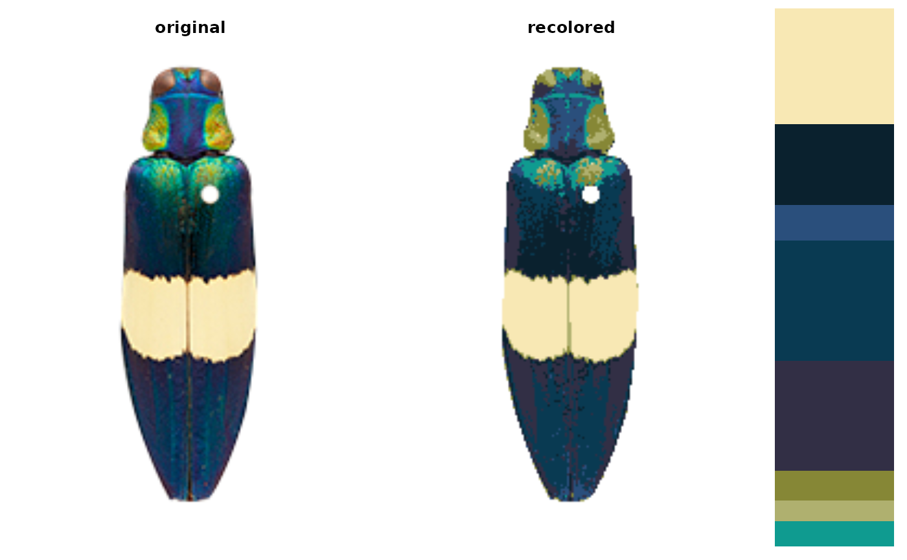
# increasing numbers of kmean colors
recolored_images <- setNames(vector("list", length = 10), c(1:10))
for (i in 1:10) {
kmeans_recolor <- recolorize(img, method = "kmeans",
n = i)
}
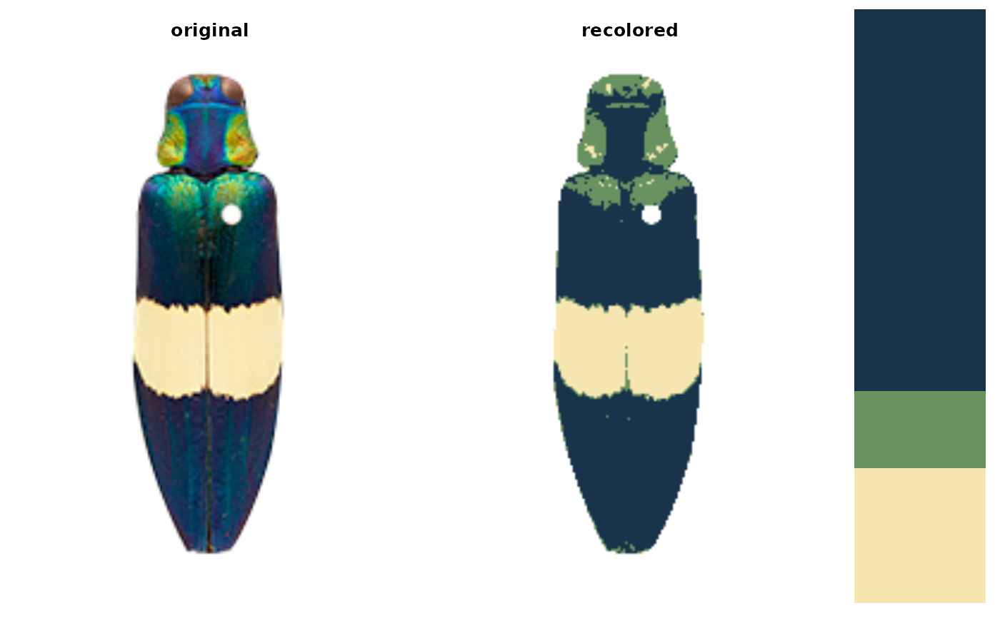
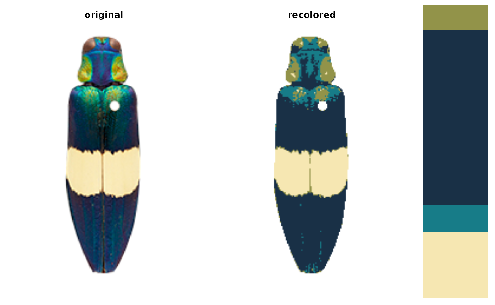
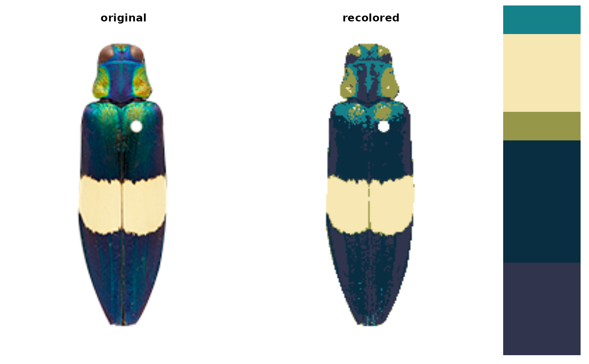
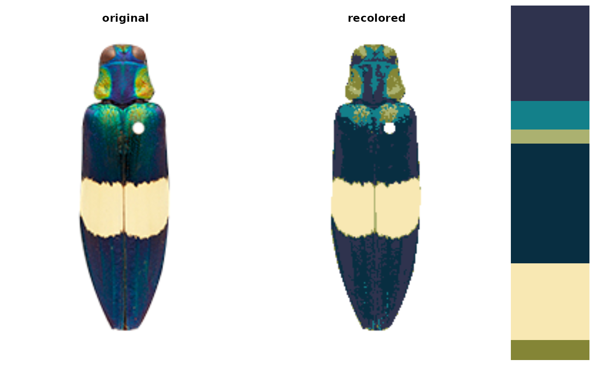
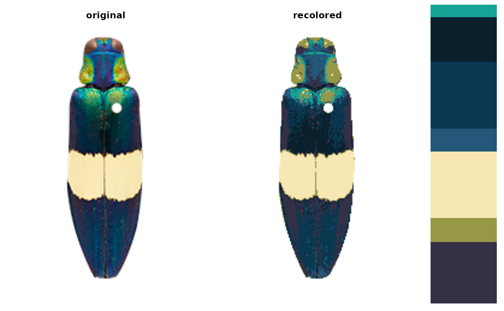
 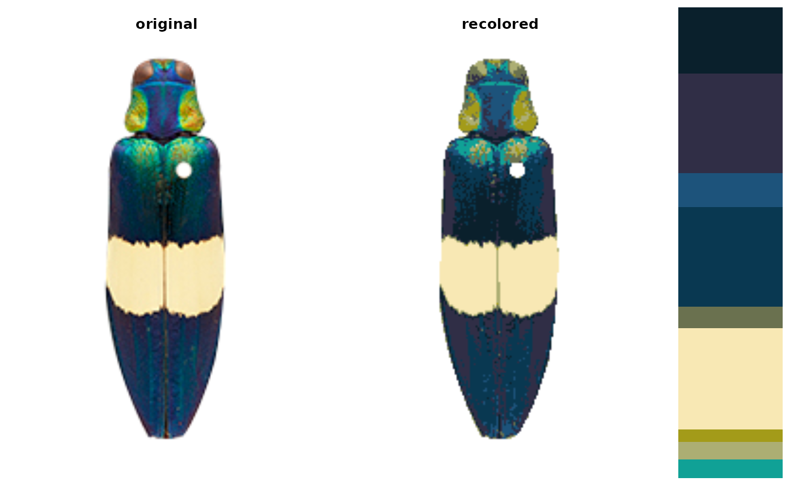
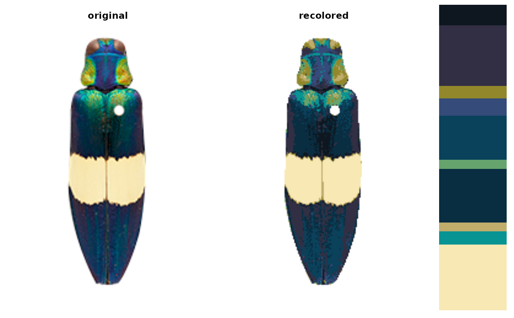
# kmeans, 10 colors
kmeans_recolor <- recolorize(img, method = "kmeans",
n = 8, plotting = FALSE)
hist_recolor <- recolorize(img, method = "hist",
bins = 2, plotting = FALSE)
#>
#> Using 2^3 = 8 total bins
# to reset graphical parameters:
current_par <- graphics::par(no.readonly = TRUE)
# compare binning vs. kmeans clustering
layout(matrix(c(1, 2, 3), ncol = 3))
plot(kmeans_recolor$original_img); title("original")
plot(recoloredImage(kmeans_recolor, type = "raster")); title("kmeans")
plot(recoloredImage(hist_recolor, type = "raster")); title("binning")
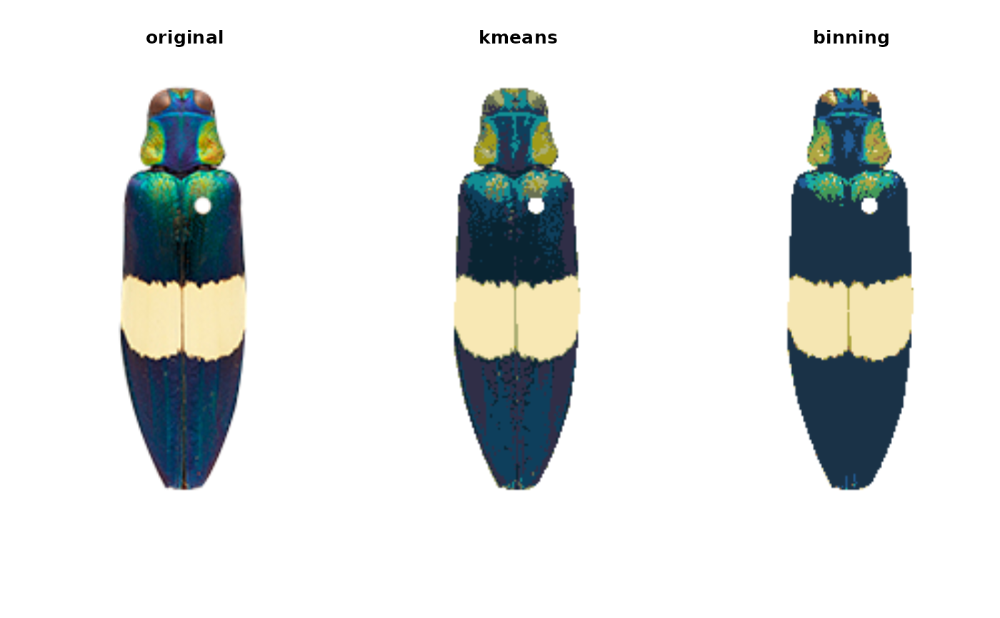
graphics::par(current_par)
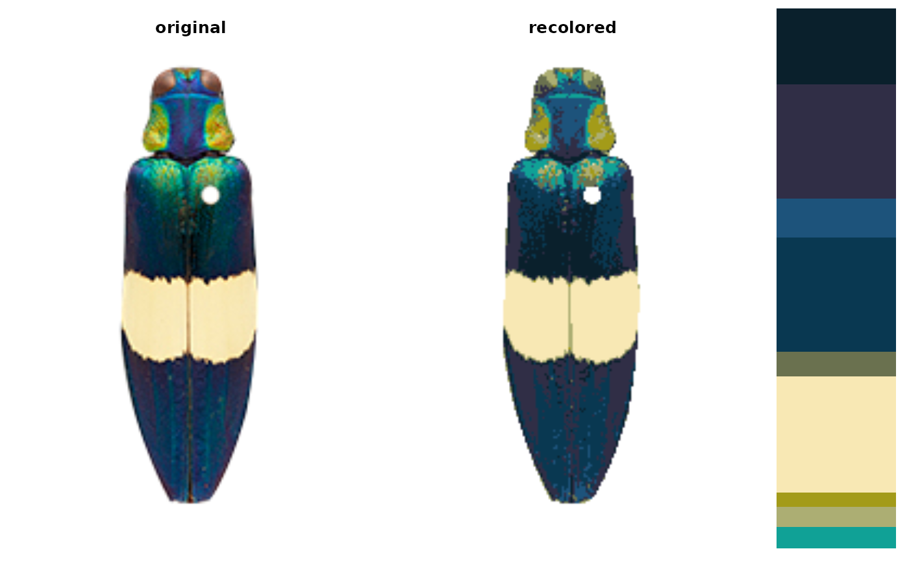
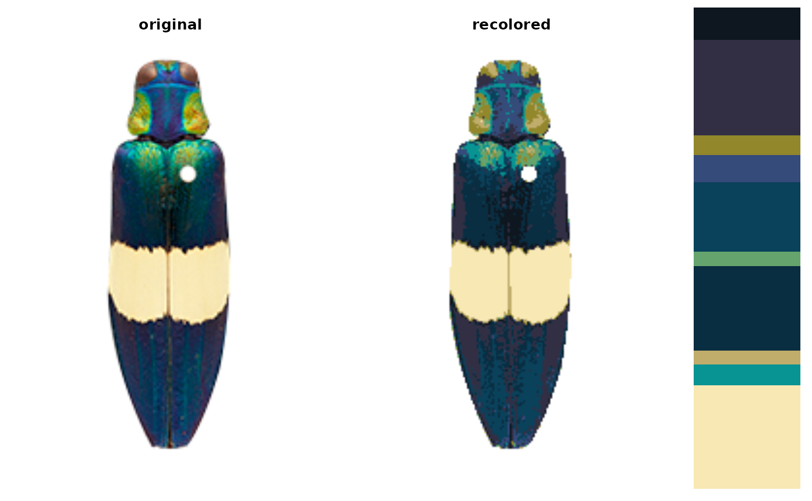
# kmeans, 10 colors
kmeans_recolor <- recolorize(img, method = "kmeans",
n = 8, plotting = FALSE)
hist_recolor <- recolorize(img, method = "hist",
bins = 2, plotting = FALSE)
#>
#> Using 2^3 = 8 total bins
# to reset graphical parameters:
current_par <- graphics::par(no.readonly = TRUE)
# compare binning vs. kmeans clustering
layout(matrix(c(1, 2, 3), ncol = 3))
plot(kmeans_recolor$original_img); title("original")
plot(recoloredImage(kmeans_recolor, type = "raster")); title("kmeans")
plot(recoloredImage(hist_recolor, type = "raster")); title("binning")
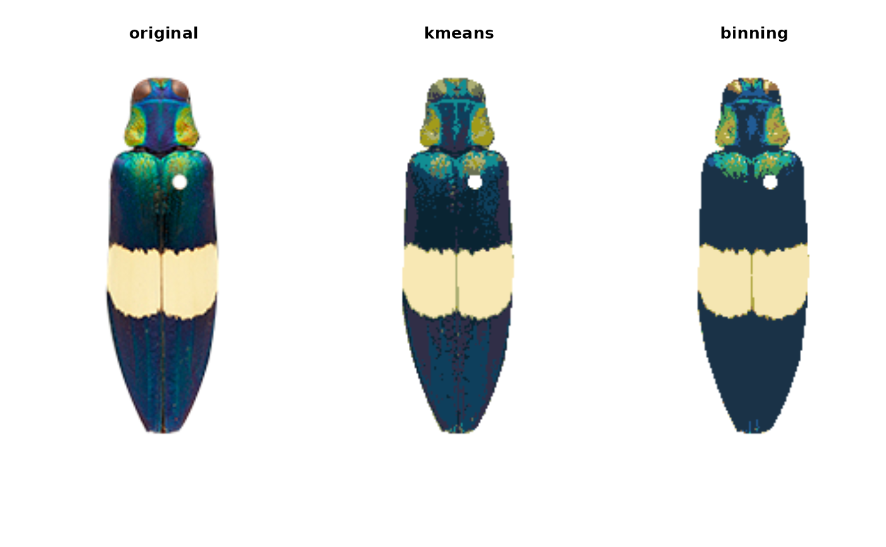
graphics::par(current_par)